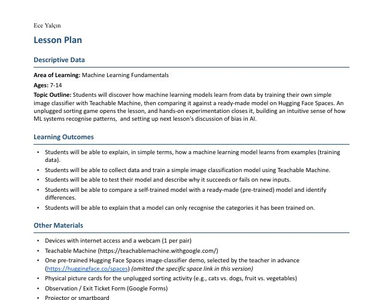
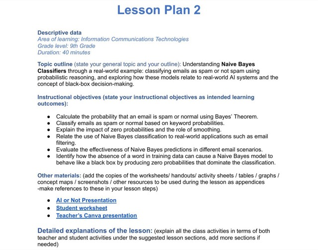
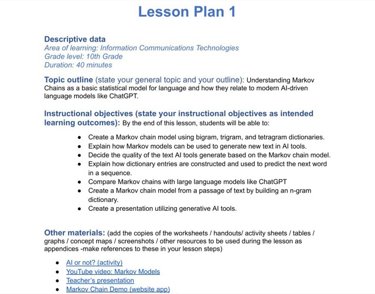

Building AI Tools for Educators,
Designing Objective-Driven Interactions.
A multidisciplinary approach that turns cognitive theory into scalable, user-centric EdTech products and interactive courseware.
Products & Tools
Tools I built for teachers, where the product decisions are actually pedagogical decisions. I shaped the pipeline, prompt architecture, and the interaction design around what actually helps someone plan, teach and assess.
Interactive Podcast
Students listen, and the audio pauses at the points where understanding usually slips. They answer, get feedback written for the mistake they actually made, then the audio picks back up. A synthesis quiz closes the activity.
Lesson Plans & Curriculum Designs

Machine Learning Fundamentals
Empowering learners across ages 7 to 14 to become active AI creators, this curriculum introduces the core mechanics of machine learning. Students progress from an unplugged pattern-recognition game to training a live image classifier, ultimately testing their own model's limitations to deeply grasp how training data shapes digital reality.

AI Decision Making and Naive Bayes Classification
Designed for 9th grade students. Turns learners into the algorithm by calculating word probabilities by hand, demonstrating how AI filters spam and how engineers fix "zero probability" biases.

Markov Chains: How AI Predicts the Next Word
Designed for 10th grade IB Computer Science students. Builds up from hand-tallied n-grams to a working Markov model, then connects it to how ChatGPT generates text.
Instructional Design & E-Learning

Where is the Toy Treasure?
Escape-room science courseware built in Unity. States of matter & properties of materials, Grade 4.
2023–2025
Project Entropy: A Scenario-Based Corporate Mission
A scenario-based corporate simulation teaching Entropy through an immersive, on-the-job investigation.
2024
Spatial Concepts Adventure
An e-learning module for 1st graders on positional language: in front of, behind, above, and below.
2020Educational Games
Twelve single-file HTML5 prototypes, each scoped to one microlearning objective for teachers to run as a quick, focused activity right after a lesson.

Digit Tower ( Basamak Kulesi)
Place value, number comparison & patterns

Volt Lab ( Devre Atölyesi)
Simple electric circuits: build & test

Idiomoji ( Deyimoji)
Turkish idioms through picture clues

Job Quest
English vocabulary: jobs & professions

State Shifters ( Madde Atölyesi)
Properties & states of matter

My Compass ( Keşif Seferi)
Map reading, directions & weather

Feel & Match
English feelings & social-emotional language

Proper Patrol ( Şifre Avı)
Capitalization & punctuation code-breaker

Count Lane ( Sayı Sokağı)
Odd & even numbers street adventure

Action Verbs
English action verbs, fast-paced streaks

Planet Protector ( Dünya Kahramanı)
Environmental awareness & recycling

Talking ABCs ( Sesli Alfabem)
Phonics & letter recognition game